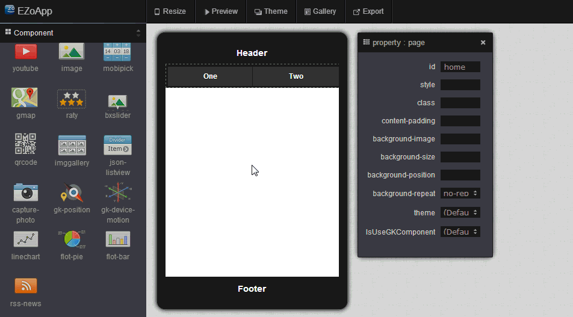
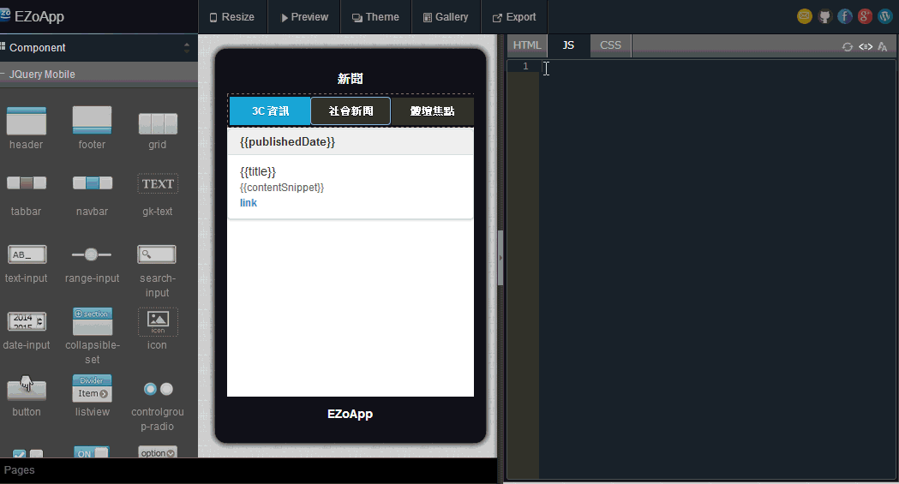

The full name of RSS is Really Simple Syndication. As its name suggests, it is a service that can very easily integrate all information. It is also somewhat like an electronic newspaper or news group. It gives us powerful editing and design capabilities, as well as allowing us to receive a wealth of information easily.
Some common examples include receiving newest article titles and previews by subscribing to the RSS of newspapers and magazines, newest weather forecasts through the RSS of the Weather Bureau, updates of celebrities through the RSS of their blogs and so on. These are examples of the convenience brought to us by RSS.
In the past, RSS applications mostly used RSS readers or email notifications. There were no discussions on how to apply this very useful and instant information on mobile device platforms. In this example, we will show you how to use EZoApp's
RSS component to quickly produce a series of article lists and to quickly read the RSS feeds from all kinds of newspapers and magazines, so that we can easily create a RSS reader on mobile device platforms.
Link of example:
Integrating JavaScript in your web - RSS services
Before we create article lists, we want to create a basic template first. We would like to be able to load the correct content of the RSS feed in the article list below when someone clicks the button in the header at the top.
As described in the previous sections, we can use the drag-and-drop method to add the
header ,
footer ,
navbar and other components into the screen.
Next, we will modify the program code of navbar by adding the corresponding RSS address. This completes the basic template. (The default of the RSS component is the CNN's RSS address. Please change it to the desired RSS site address yourself.)
<div data-role="navbar" class="menu">
<ul>
<li apple="http://www.appledaily.com.tw/rss/newcreate/kind/rnews/type/111">
<a class="ui-btn-active ui-state-persist">rss0</a>
</li>
<li apple="http://www.appledaily.com.tw/rss/newcreate/kind/rnews/type/102">
<a>rss1</a>
</li>
<li apple="http://www.appledaily.com.tw/rss/newcreate/kind/rnews/type/107">
<a>rss2</a>
</li>
</ul>
</div>
Next, we drag EZoApp's RSS component into the screen. You can see that it generates a list screen with a title automatically. There are several curly braces in the list. When we click on the preview button, corresponding RSS contents will be entered into those curly braces.
You can perform basic editing of the attributes of the RSS component by using the attribute panel on the left; or, you can change the code in the HTML tab in the code editor directly.
<div id="gk-428PVoA" is="rss-news" service="http://www.appledaily.com.tw/rss/newcreate/kind/rnews/type/111" rownum="3">
<!--service rss url -->
<!--rownum list number -->
<ul data-role="listview" data-autodividers="true" data-inset="true" is="json-listview">
<li divider="{{publishedDate}}" is="listview-li">
<span>{{title}}</span>
<br>
<span style="color:#666;font-size:0.8em;white-space: normal;">{{contentSnippet}}</span>
<br>
<span style="color:#666;font-size:0.8em;white-space: normal;">
<a href="{{link}}" target="_blank">link</a>
</span>
</li>
</ul>
</div>
After the screen and HTML are completed, we just need to modify the JavaScript code, and then we can easily create a RSS reader for news!
$(document).on("gkComponentsReady", function () {
var $ele = $("#gk-428PVoA"),
FEED_URL = $ele.attr("service"),
$listview = $("#gk-428PVoA").find('[data-role="listview"]');
rowNum = $ele.attr('rowNum');
$('.menu li').on('click', function () {
FEED_URL = $(this).attr('apple');
fn_rss(FEED_URL);
});
fn_rss(FEED_URL);
function fn_rss(FEED_URL) {
if (FEED_URL) {
$.ajax({ //Query ajax api
beforeSend: function () {
$listview.css('visibility', 'hidden');
},
url: 'http://ajax.googleapis.com/ajax/services/feed/load?v=1.0&num=' + rowNum + '&callback=?&q=' + encodeURIComponent(FEED_URL),
dataType: 'json',
success: function (data) {
if (data.responseData.feed && data.responseData.feed.entries) {
var models = data.responseData.feed.entries;
$listview.gk('model', models);
$listview.css('visibility', 'visible');
}
}
});
}
}
});
Because EZoApp's RSS component uses the RSS service provided by Google, the corresponding variable names will need to follow Google's naming rules (which are the variable names in the curly braces). Listed below are several attribute names provided by Google's RSS service:
Because we can read the content of the information provided by RSS, we can retrieve the block or information we want from the content and apply them or change them ourselves in ways that are more flexible. If we can utilize these attributes properly, we can create our very own RSS readers!
Link of example:
Integrating JavaScript in your web - RSS services